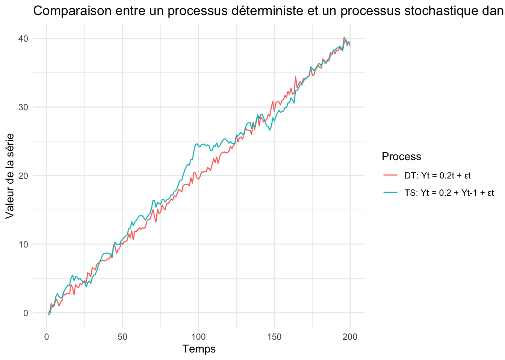
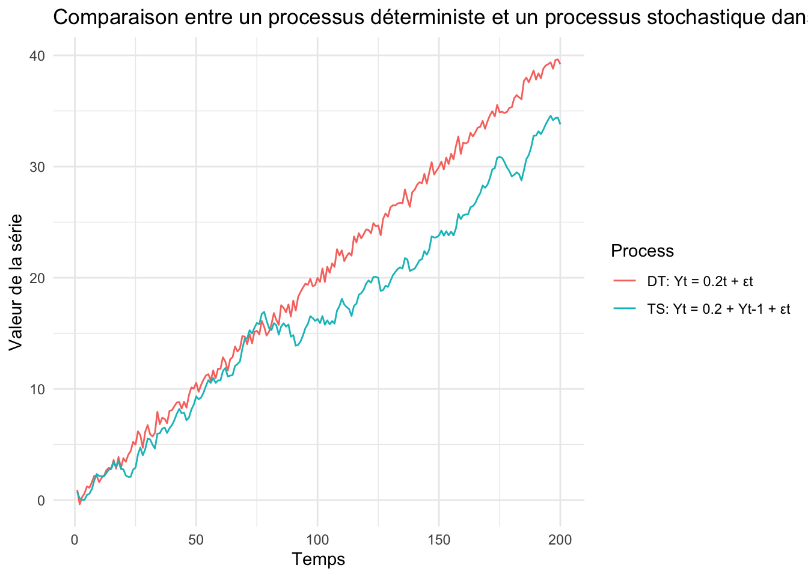
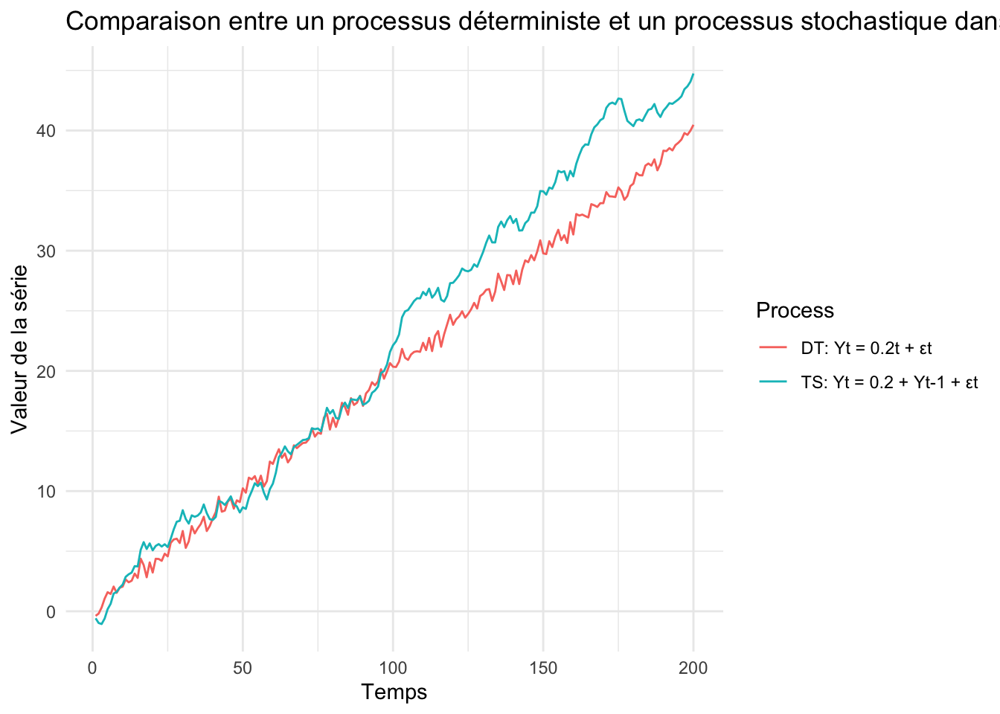
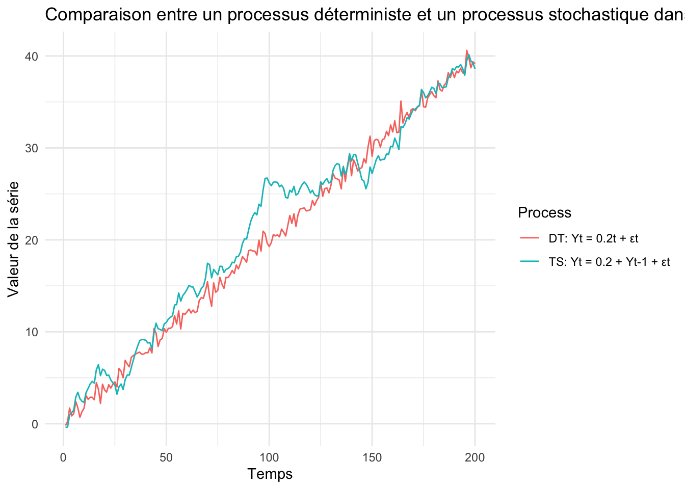
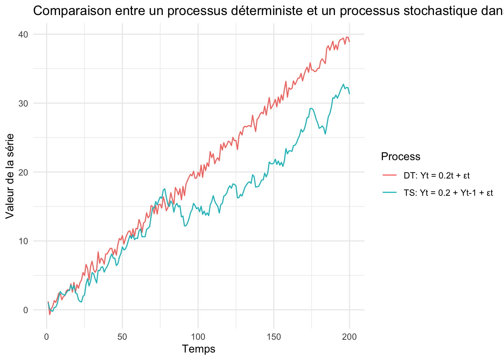
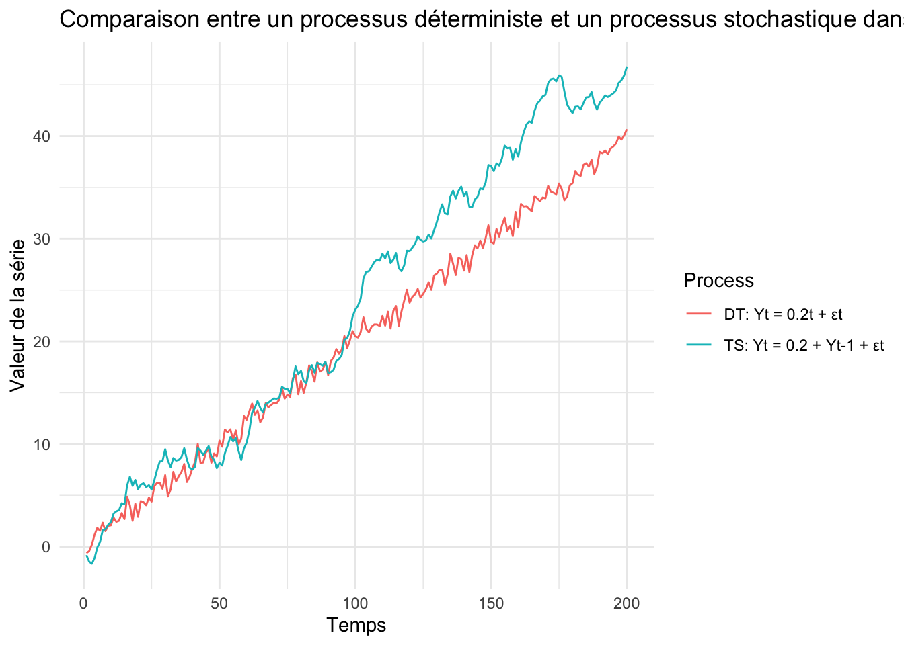
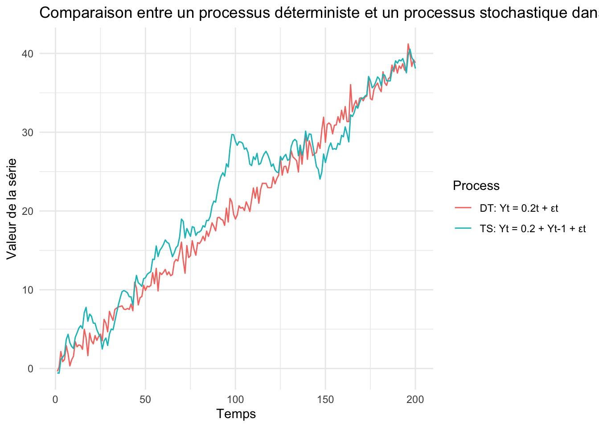
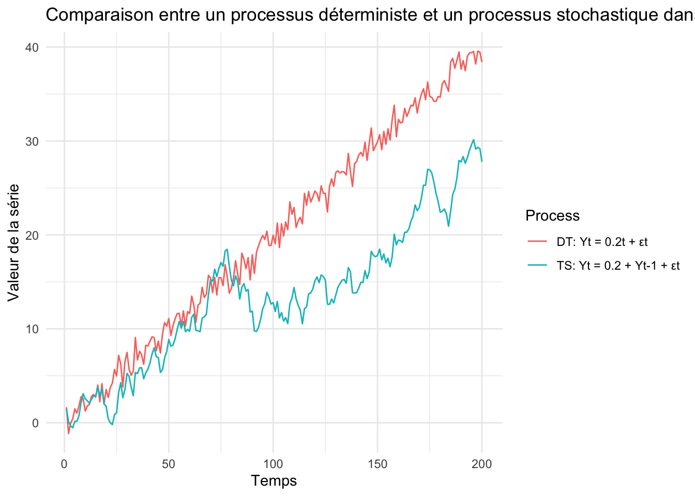
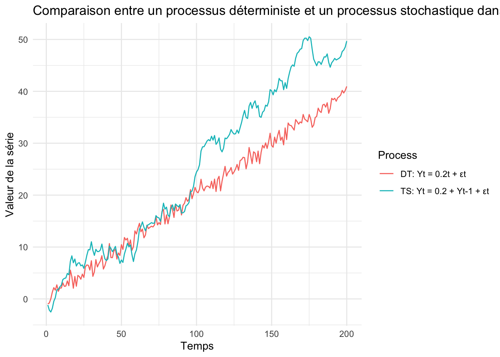

library(ggplot2)set.seed(123)n <-200sigma2 <-1/4epsilon <-rnorm(n, mean =0, sd =sqrt(sigma2)) # Génération du bruit blancY_DT <-numeric(n)Y_TS <-numeric(n)for (t in1:n) { Y_DT[t] <-0.2* t + epsilon[t] if (t ==1) { Y_TS[t] <- epsilon[t] } else { Y_TS[t] <-0.2+ Y_TS[t -1] + epsilon[t] }}# Création du DataFramedata <-data.frame(Time =rep(1:n, 2),Value =c(Y_DT, Y_TS),Process =rep(c("DT: Yt = 0.2t + εt", "TS: Yt = 0.2 + Yt-1 + εt"), each = n))# Graphiqueggplot(data, aes(x = Time, y = Value, color = Process)) +geom_line() +labs(title ="Comparaison entre un processus déterministe et un processus stochastique dans une loi N(0,1/4)",x ="Temps",y ="Valeur de la série") +theme_minimal()

Interprétation
Le graphique compare deux séries soumises à un même bruit N(0,1/4): un processus déterministe ( Y_t = 0.2t + t ), et un processus stochastique ( Y_t = 0.2 + Y*{t-1} + _t ).
La série déterministe suit une tendance linéaire régulière, perturbée temporairement par de faibles chocs : elle est stationnaire autour d’une tendance. En revanche, la série stochastique accumule les chocs dans le temps, ce qui entraîne des écarts de plus en plus marqués : elle est non stationnaire avec des effets de chocs permanents.
Seed(287)
set.seed(287)n <-200sigma2 <-1/4epsilon <-rnorm(n, mean =0, sd =sqrt(sigma2)) # Génération du bruit blancY_DT <-numeric(n)Y_TS <-numeric(n)for (t in1:n) { Y_DT[t] <-0.2* t + epsilon[t] if (t ==1) { Y_TS[t] <- epsilon[t] } else { Y_TS[t] <-0.2+ Y_TS[t -1] + epsilon[t] }}# Création du DataFramedata <-data.frame(Time =rep(1:n, 2),Value =c(Y_DT, Y_TS),Process =rep(c("DT: Yt = 0.2t + εt", "TS: Yt = 0.2 + Yt-1 + εt"), each = n))# Graphiqueggplot(data, aes(x = Time, y = Value, color = Process)) +geom_line() +labs(title ="Comparaison entre un processus déterministe et un processus stochastique dans une loi N(0,1/4)",x ="Temps",y ="Valeur de la série") +theme_minimal()

Interprétation
Avec ce nouveau tirage aléatoire, on retrouve la même dynamique générale : le processus déterministe suit une tendance régulière, alors que le processus stochastique évolue de manière plus irrégulière. Cette fois, le DT reste au-dessus du TS sur presque toute la période, ce qui montre que la trajectoire du processus stochastique dépend fortement des chocs initiaux. Le fond reste inchangé : le DT absorbe les chocs, le TS les cumule dans le temps.
Seed(986)
set.seed(986)n <-200sigma2 <-1/4epsilon <-rnorm(n, mean =0, sd =sqrt(sigma2)) # Génération du bruit blancY_DT <-numeric(n)Y_TS <-numeric(n)for (t in1:n) { Y_DT[t] <-0.2* t + epsilon[t] if (t ==1) { Y_TS[t] <- epsilon[t] } else { Y_TS[t] <-0.2+ Y_TS[t -1] + epsilon[t] }}# Création du DataFramedata <-data.frame(Time =rep(1:n, 2),Value =c(Y_DT, Y_TS),Process =rep(c("DT: Yt = 0.2t + εt", "TS: Yt = 0.2 + Yt-1 + εt"), each = n))# Graphiqueggplot(data, aes(x = Time, y = Value, color = Process)) +geom_line() +labs(title ="Comparaison entre un processus déterministe et un processus stochastique dans une loi N(0,1/4)",x ="Temps",y ="Valeur de la série") +theme_minimal()

Interprétation
Avec ce nouveau tirage aléatoire, on retrouve la même dynamique générale: le processus déterministe (rouge) suit une tendance régulière, alors que le processus stochastique (bleu) évolue de manière plus irrégulière. Cette fois, le TS dépasse nettement le DT à partir du milieu de la période, ce qui montre une nouvelle fois que la trajectoire du processus stochastique dépend fortement des chocs accumulés. Le fond reste inchangé : le DT absorbe les chocs, le TS les cumule dans le temps.
Conclusion
La dynamique globale reste constante : le processus déterministe suit toujours une tendance régulière perturbée temporairement par le bruit, tandis que le processus stochastique affiche une trajectoire plus irrégulière, qui s’écarte progressivement en fonction des chocs accumulés. Dans certaines simulations, le TS reste en dessous du DT, dans d’autres il le dépasse, ce qui illustre parfaitement la forte sensibilité du processus stochastique à la réalisation des chocs initiaux. Ces trois graphiques confirment que le DT est stable et prévisible, alors que le TS est instable et imprévisible à long terme, malgré des conditions de départ identiques
Loi N(0,1/2)
Seed(123)
set.seed(123)# Paramètresn <-200# Nombre d'observationssigma2 <-1/2# Variance du bruitepsilon <-rnorm(n, mean =0, sd =sqrt(sigma2)) # Génération du bruit blanc# Simulation des processusY_DT <-numeric(n)Y_TS <-numeric(n)for (t in1:n) { Y_DT[t] <-0.2* t + epsilon[t] if (t ==1) { Y_TS[t] <- epsilon[t] } else { Y_TS[t] <-0.2+ Y_TS[t -1] + epsilon[t] }}# Création du DataFramedata <-data.frame(Time =rep(1:n, 2),Value =c(Y_DT, Y_TS),Process =rep(c("DT: Yt = 0.2t + εt", "TS: Yt = 0.2 + Yt-1 + εt"), each = n))# Graphiqueggplot(data, aes(x = Time, y = Value, color = Process)) +geom_line() +labs(title ="Comparaison entre un processus déterministe et un processus stochastique dans une loi N(0,1/2)",x ="Temps",y ="Valeur de la série") +theme_minimal()

Interprétation
Avec ce nouveau tirage aléatoire et une variance du bruit plus élevée, on observe une dynamique toujours similaire : le processus déterministe progresse régulièrement selon sa tendance linéaire, tandis que le processus stochastique présente une trajectoire plus irrégulière. Ici, les deux séries restent proches sur l’ensemble de l’échantillon, mais on note que le TS dépasse légèrement le DT en fin de période. Cela montre que l’augmentation de la variance amplifie la variabilité des deux séries, mais affecte davantage le TS qui accumule les chocs. Le DT, lui, reste globalement stable autour de sa pente.
Seed(287)
set.seed(287)# Paramètresn <-200# Nombre d'observationssigma2 <-1/2# Variance du bruitepsilon <-rnorm(n, mean =0, sd =sqrt(sigma2)) # Génération du bruit blanc# Simulation des processusY_DT <-numeric(n)Y_TS <-numeric(n)for (t in1:n) { Y_DT[t] <-0.2* t + epsilon[t] if (t ==1) { Y_TS[t] <- epsilon[t] } else { Y_TS[t] <-0.2+ Y_TS[t -1] + epsilon[t] }}# Création du DataFramedata <-data.frame(Time =rep(1:n, 2),Value =c(Y_DT, Y_TS),Process =rep(c("DT: Yt = 0.2t + εt", "TS: Yt = 0.2 + Yt-1 + εt"), each = n))# Graphiqueggplot(data, aes(x = Time, y = Value, color = Process)) +geom_line() +labs(title ="Comparaison entre un processus déterministe et un processus stochastique dans une loi N(0,1/2)",x ="Temps",y ="Valeur de la série") +theme_minimal()

Interprétation
Avec ce nouveau tirage, on observe une configuration différente : le processus déterministe dépasse clairement le processus stochastique sur presque toute la période. Cela illustre à nouveau que, bien que les deux séries partagent la même pente moyenne (0.2), le comportement du TS est fortement influencé par les chocs initiaux. Ici, ces chocs ont freiné la progression de la série stochastique, tandis que la série déterministe, insensible à la mémoire, poursuit une trajectoire plus régulière. Le contraste est net en fin de période, où le DT atteint des niveaux beaucoup plus élevés que le TS.
Seed(986)
set.seed(986)# Paramètresn <-200# Nombre d'observationssigma2 <-1/2# Variance du bruitepsilon <-rnorm(n, mean =0, sd =sqrt(sigma2)) # Génération du bruit blanc# Simulation des processusY_DT <-numeric(n)Y_TS <-numeric(n)for (t in1:n) { Y_DT[t] <-0.2* t + epsilon[t] if (t ==1) { Y_TS[t] <- epsilon[t] } else { Y_TS[t] <-0.2+ Y_TS[t -1] + epsilon[t] }}# Création du DataFramedata <-data.frame(Time =rep(1:n, 2),Value =c(Y_DT, Y_TS),Process =rep(c("DT: Yt = 0.2t + εt", "TS: Yt = 0.2 + Yt-1 + εt"), each = n))# Graphiqueggplot(data, aes(x = Time, y = Value, color = Process)) +geom_line() +labs(title ="Comparaison entre un processus déterministe et un processus stochastique dans une loi N(0,1/2)",x ="Temps",y ="Valeur de la série") +theme_minimal()

Interprétation
Avec ce troisième tirage, le processus stochastique est nettement au dessus sur le déterministe dès la moitié de la période. On observe ici une forte montée du TS, liée à une succession de chocs positifs qui, une fois cumulés, entraînent un écart important par rapport au DT. À l’inverse, le processus déterministe reste fidèle à sa tendance linéaire, avec des fluctuations modérées. Cette configuration montre à quel point le processus stochastique peut diverger rapidement selon les chocs, même si les deux séries partagent la même pente moyenne.
Conclusion
Pour une loi N(0,1/2) nous pouvons remarquer que la dynamique reste constante comme sur la loi N(0,1/4). En effet, le processus déterministe suit toujours une tendance régulière, seulement perturbée de manière temporaire par un bruit modéré. En revanche, le processus stochastique présente une trajectoire plus irrégulière, qui s’écarte progressivement à mesure que les chocs s’accumulent dans le temps. Dans certaines simulations, le TS reste en dessous du DT, dans d’autres il le dépasse nettement, ce qui illustre parfaitement la forte sensibilité du processus stochastique à la réalisation des chocs aléatoires. Ces trois graphiques confirment que le DT est stable, tandis que le TS reste instable.
Loi N(0,1)
Seed(123)
set.seed(123)# Paramètresn <-200# Nombre d'observationssigma2 <-1# Variance du bruitepsilon <-rnorm(n, mean =0, sd =sqrt(sigma2)) # Génération du bruit blanc# Simulation des processusY_DT <-numeric(n)Y_TS <-numeric(n)for (t in1:n) { Y_DT[t] <-0.2* t + epsilon[t] if (t ==1) { Y_TS[t] <- epsilon[t] } else { Y_TS[t] <-0.2+ Y_TS[t -1] + epsilon[t] }}# Création du DataFramedata <-data.frame(Time =rep(1:n, 2),Value =c(Y_DT, Y_TS),Process =rep(c("DT: Yt = 0.2t + εt", "TS: Yt = 0.2 + Yt-1 + εt"), each = n))# Graphiqueggplot(data, aes(x = Time, y = Value, color = Process)) +geom_line() +labs(title ="Comparaison entre un processus déterministe et un processus stochastique dans une loi N(0,1)",x ="Temps",y ="Valeur de la série") +theme_minimal()

Interprétation
Pour cette loi N(0,1), la dynamique reste la même observée que les deux autres lois. En effet,le processus déterministe suit une trajectoire croissante régulière, alors que le processus stochastique fluctue davantage et s’en écarte par moments. Ici, le TS dépasse nettement le DT autour de t=100. avant de redescendre et de se rapprocher en fin de période.
Seed(287)
set.seed(287)# Paramètresn <-200# Nombre d'observationssigma2 <-1# Variance du bruitepsilon <-rnorm(n, mean =0, sd =sqrt(sigma2)) # Génération du bruit blanc# Simulation des processusY_DT <-numeric(n)Y_TS <-numeric(n)for (t in1:n) { Y_DT[t] <-0.2* t + epsilon[t] if (t ==1) { Y_TS[t] <- epsilon[t] } else { Y_TS[t] <-0.2+ Y_TS[t -1] + epsilon[t] }}# Création du DataFramedata <-data.frame(Time =rep(1:n, 2),Value =c(Y_DT, Y_TS),Process =rep(c("DT: Yt = 0.2t + εt", "TS: Yt = 0.2 + Yt-1 + εt"), each = n))# Graphiqueggplot(data, aes(x = Time, y = Value, color = Process)) +geom_line() +labs(title ="Comparaison entre un processus déterministe et un processus stochastique dans une loi N(0,1)",x ="Temps",y ="Valeur de la série") +theme_minimal()

Interprétation
Avec ce nouveau tirage aléatoire, ,nous pouvons remarquer le processus déterministe est toujours stable dans le temps et est au dessus du stochastique sur l’ensemble de la période. Nous pouvons remarquer, que à partiur de T=90, TS chute brutalement et reste en dessous du processus déterministe.
Seed(986)
set.seed(986)# Paramètresn <-200# Nombre d'observationssigma2 <-1# Variance du bruitepsilon <-rnorm(n, mean =0, sd =sqrt(sigma2)) # Génération du bruit blanc# Simulation des processusY_DT <-numeric(n)Y_TS <-numeric(n)for (t in1:n) { Y_DT[t] <-0.2* t + epsilon[t] if (t ==1) { Y_TS[t] <- epsilon[t] } else { Y_TS[t] <-0.2+ Y_TS[t -1] + epsilon[t] }}# Création du DataFramedata <-data.frame(Time =rep(1:n, 2),Value =c(Y_DT, Y_TS),Process =rep(c("DT: Yt = 0.2t + εt", "TS: Yt = 0.2 + Yt-1 + εt"), each = n))# Graphiqueggplot(data, aes(x = Time, y = Value, color = Process)) +geom_line() +labs(title ="Comparaison entre un processus déterministe et un processus stochastique dans une loi N(0,1)",x ="Temps",y ="Valeur de la série") +theme_minimal()

Interprétation
Avec ce nouveau tirage aléatoire, ,nous pouvons remarquer le processus déterministe est toujours stable dans le temps et est en dessous du stochastique sur l’ensemble de la période. Nous pouvons remarquer, que à partiur de T=90, TS monte brutalement et reste au dessus du processus déterministe.
Conclusion
Pour une loi N(0,1), la dynamique globale reste constante : le processus déterministe (rouge) suit toujours une tendance régulière perturbée temporairement par le bruit, tandis que le processus stochastique (bleu) affiche une trajectoire plus irrégulière, qui s’écarte progressivement en fonction des chocs accumulés. Avec une variance plus élevée, ces écarts deviennent encore plus marqués. Le TS peut rester en retrait comme dans le deuxième graphique, coller au DT comme dans le premier, ou bien le dépasser largement comme dans le troisième. Cette variabilité illustre parfaitement la forte sensibilité du processus stochastique à la réalisation des chocs, qui s’amplifie avec la taille des perturbations. Ces trois graphiques confirment que le DT est stable et prévisible, tandis que le TS est instable et imprévisible à long terme